Introduction#
itkwasm enables universal spatial analysis and visualization via WebAssembly (wasm) .
itkwasm Python packages run on all modern web browsers and at a system level across all major operating systems and hardware architectures .
All versions of Python 3.7+ are supported .
Additionally, non-wasm packages accelerate performance via GPUs when available .
In the browser, Pyodide-compatible packages provide client-side web app scripting in Python, including via PyScript, and sustainable, scalable Jupyter deployments via JupyterLite .
At a system level, Linux, macOS, and Windows operating systems are supported on x86_64 and ARM via wasmtime-py .
itkwasm Python packages are highly modular, have a tiny footprint, and have minimal dependencies; they only depend on itkwasm, numpy, and pyodide or wasmtime .
Environment dispatch#
There is a primary, pip-installable Python package. In browser environments, this will pull a corresponding Emscripten-enabled Python package. For system Python distributions, this will bring in a corresponding WASI-enabled Python package. When GPU-accelerated implementations of functions are available in other packages along with required hardware and software, simply pip-installing the accelerator package will cause function calls to invoke accelerated overrides registered with modern package metadata.

Browser and system APIs#
While synchronous functions are available in system packages, browser packages provide asynchronous functions for non-blocking, performant execution in the JavaScript runtime event loop. These functions are called with modern Python’s async / await support.
For example, to install the itkwasm-compress-stringify package:
pip install itkwasm-compress-stringify
In Pyodide, e.g. the Pyodide REPL or JupyterLite,
import micropip
await micropip.install('itkwasm-compress-stringify')
In the browser, call the async *_async function with the await keyword.
from itkwasm_compress_stringify import compress_stringify
data = bytes([33,44,55])
compressed = compress_stringify(data)
from itkwasm_compress_stringify import compress_stringify_async
data = bytes([33,44,55])
compressed = await compress_stringify_async(data)